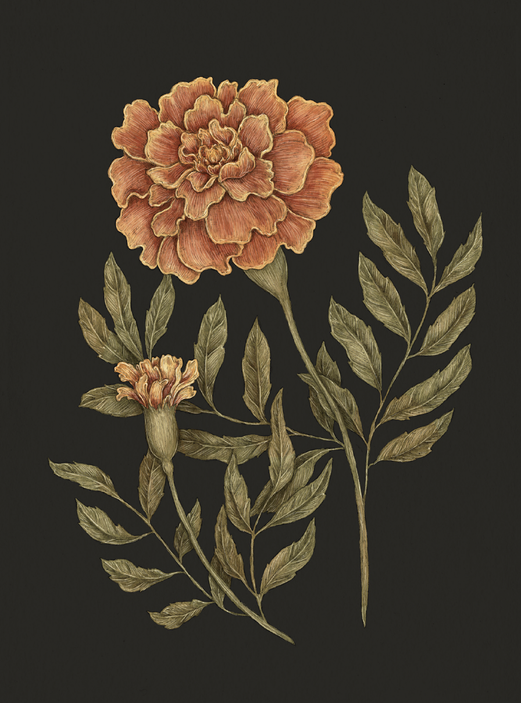

The Language of Flowers
Marigold

Marigold
Tagetes
Meaning
Grief
Origin
When clouds roll in or night falls, the marigold curls inward and lets its head droop. When it opens
again in the sunlight, its petals, wet with dew, appear to be crying. Traditionally, marigolds are
used to celebrate Dia de los Muertos (Day of the Dead) in Mexico, when the spirits of the departed
are believed to visit the living. This celebration is rooted in the Aztec festival honoring
Mictecacihuatl, the goddess of the underworld.
Pair With
- Willow to indicate sorrow at the loss of a loved one
- Rue to apologize for the pain you've caused